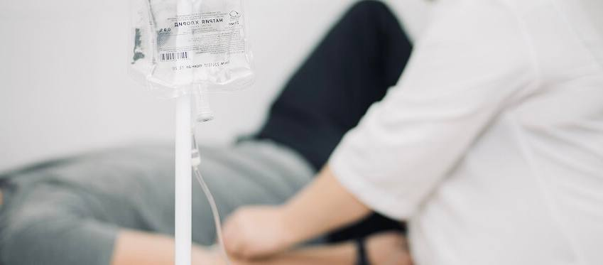

+380(97) 369 76
65
+380(97) 369 76
65Вывод из запоя на дому
Вывод из запоя на дому - мы помогли более 2000 тысячам пациентам
Работаем в Одессе, Киеве, Львове, Харькове, Днепре, Запорожье, Черноморске


Бесплатная консультация, работаем круглосуточно 24/7
Вывод из запоя на дому - мы помогли более 2000 тысячам пациентам
Работаем в Одессе, Киеве, Львове, Харькове, Днепре, Запорожье, Черноморске
Вывод из запоя на дому - это один из популярных вариантов лечения алкогольной зависимости, направленный на снятие алкогольной интоксикации с помощью капельницы от алкоголя с последующим купированием патологической тяги и повторного употребления спиртных напитков. Вывод из запоя на дому проводиться с помощью капельницы от алкоголя с сильными детоксикационными растворами. Вывод из запоя на дому проверенный метода лечения алкогольной зависимости после которого пациенты не только прекращают злоупотребление выпивкой но и могут полностью восстановиться от токсического воздействия спиртных напитков.
Выведения из запоя на дому - это комбинированный и длительный комплекс лечения алкоголизма с помощью инфузионной терапии, который имеет огромную эффективность в сравнении с таблетированным лечением или народной медициной. Выведение из запоя на дому - мероприятие которое требует хороших навыков и знаний врача нарколога для качественного, безопасного и комплексного лечения.
Выведение из запоя на дому включает в себя 3 основных этапа лечения алкогольной зависимости:
Что бы выйти из запоя на дому мы рекомендуем полностью отказаться от любого употребления алкоголя , пить большое количество воды , принять сорбенты и аминокислоты а так же вызвать нарколога для постановки капельницы от алкоголя на дому. Что бы вызвать врача нарколога в Украине - позвоните по номеру 050-021-69-57.
Вывод из запоя на дому начинается от 1699 грн и может меняться в зависимости от длительности и тяжести алкогольной интоксикации.
Для капельницы от алкоголя на дому часто используют такие препараты как:
Состав капельницы выбирает только врач и может отличаться от состояния пациента, мы описали только малую часть которую используют врачи наркологи.
Выход из запоя на дому - это процесс когда пациент самостоятельно или с помощью нарколога прекращает бесконтрольный прием любого алкоголя. Выход из запоя на дому самостоятельно без медицинской помощи может быть опасным для здоровья пациента и несет за собой такие возможны осложнения как: белая горячка , алкогольный психоз , эпилепсия и летальный исход. Если ваш родственник находиться в состоянии длительного запоя тогда самым верный шагом будет обратиться за наркологической помощью по номеру 050-021-69-57.
Прокапаться от алкоголя на дому - означает вызвать врача нарколога для постановки капельницы от алкогольной интоксикации. Прокапаться от алкоголя на дому старый, доказательный и высокоэффективный метод снятия алкогольной интоксикации который гарантирует плавный выход из любого запойного состояния. Качественно прокапать от алкоголя на дому может только нарколог который полностью оценит состояние и тяжесть больного а так же учтет стадии и форму алкоголизма. Помните что если капельницу от алкоголя ставит медсестра а не врач - это всегда высокий риск осложнений для здоровья пациента.
Квалифицированно прокапать от алкоголя на дому может только врач-нарколог или врач-реаниматолог, специфическое лечение алкогольной интоксикации требует высококвалифицированного специалиста который сможет полноценно оценить тяжесть состояния больного а так же прокапать от алкоголя на дому с максимальным эффектом и безопасностью для больного.
Преимущества капельницы от алкоголя на дому:
Капельница от похмелья на дому проводиться врачом-наркологом в случаях когда злоупотребление алкоголем не превышает двухдневный срок а также тяжесть алкогольного отравления позволяет проводить врачебную манипуляцию дома. Капельница от похмелья имеет схожий состав по сравнению с капельницей от запойных состояний но отличается в выборе детоксикационных растворов а так же объемов которые вводятся пациенту. Стоит понимать что капельница от похмелья направленна на быстрое и эффективное лечение острого алкогольного отравления в то время как вывод из запоя на дому имеет много этапную пошаговую комбинированную медикаментозно психологическую помощь.
Вызов нарколога на дом может осуществляться в случаях алкогольного или наркотического отравления а так же когда происходит длительное употребление спиртных напитков вплоть до запойных состояний с тяжелыми последствиями для организма. Так же вызов нарколога на дому может осуществляться когда больной не может добраться до стационара по каким либо причинам а его состояния позволяет проводить безопасное лечение дома.
Что бы вызвать нарколога в Украине вам нужно позвонить по номеру 050-021-69-57.
Для вывода из запоя на дому народными средствами мы можем порекомендовать:
Запой всегда будет потенциально опасным для здоровья и жизни пациента , используйте народные средства только в случаи невозможности обратиться за какой либо медицинской помощью.
Анонимно

"Никакими усилиями самостоятельно я не смогла преодолеть запой, и наступала ломка, сопровождаемая повышенным давлением и пульсом. Тогда я решила обратиться за помощью в клинику. Врачи оказали мне неоценимую поддержку! Уже прошел месяц, и я не только не употребляю алкоголь, но даже не испытываю к нему желания!"
Анонимно
"Могу с уверенностью порекомендовать данный центр для тех, кто ищет помощь при выводе из запоя. Я неоднократно обращался к ним и могу сказать, что цена соответствует качеству услуг. После проведения капельницы в клинике, вся тяга к алкоголю проходит, и я чувствую себя гораздо лучше. Это действительно эффективный метод, и я благодарен клинике за их профессионализм и заботу!"
Анонимно
"Я очень благодарен за то, что вы помогли мне разобраться с моей проблемой алкоголизма и найти ее решение. Давно осознавал, что без помощи профессионалов я не справлюсь, и я не ошибся, выбрав ваш центр Амбрелла. Здесь действительно предоставляется профессиональная помощь, которая оказалась для меня реальным спасением. Огромное спасибо за вашу поддержку и заботу!"
Анонимно
"Неоднократно я пытался бросить алкоголь самостоятельно, но каждый раз уговаривал себя продолжать. Я сначала ограничивался одной бутылкой в день, потом двумя, и в итоге вновь попадал в запой. Но в итоге, я смог прекратить употребление алкоголя только после того, как обратился в центр Амбрелла и заказал у них услугу вывода из запоя. Уже не пью 3 месяца и удалось полностью восстановиться. Благодарю врача который меня вел - Алексея Валерьевича"
Анонимно
"Здравствуйте! Я хотел бы выразить свою искреннюю благодарность клинике за быстрое и профессиональное освобождение моего мужа пивного рабства! Ранее у меня уже не было никаких надежд на его выздоровление. Однако, благодаря вашим перспективным методам лечения, мы теперь идем к полному отказу от алкоголя. Вы дали нам новую надежду и оказали неоценимую помощь! Спасибо вам за все!"
Анонимно
"Я долгое время страдал от запоев и не мог справиться с этой проблемой. Однако, когда я обратился в этот центр, они быстро помогли мне вернуться на ноги, и самое главное - предоставили мне возможность не возвращаться к запоям. Уже почти полгода я не испытываю запоев! Это для меня настоящее чудо, я никогда не думал, что смогу так преодолеть свои проблемы. Большое спасибо центру Амбрелла!"
Анонимно
"Благодарю ваш центр Амбрелла за оперативное и высококачественное лечение! Женский алкоголизм - это настоящее горе, с которым невозможно справиться в одиночку. Я уже потеряла надежду, но благодаря вашей помощи, она вернулась ко мне! Отдельная благодарность врачу Станиславу Вячеславовичу, а также благодарность Богу за то, что он послал мне такое чудо как ваша центр! Спасибо вам всем!"
Анонимно
"Хочу выразить благодарность врачу Владиславу Алексеевичу за то, что вы избавили меня от этого ужаса. Я уже был в отчаянии, перепробовал множество клиник и центров, но только здесь я наконец получил настоящую помощь! Алкоголь полностью разрушил меня, и если бы не ваша помощь, я, возможно, уже не был бы жив. С вами я смог вернуть себе жизнь и буду благодарен вам всегда!"
Приезд в течении 60 минут от момента поступления заявки
Наши филиалы есть во всех больших городах Украины.
Мы оказываем профессиональную доказательную медицинскую помощь. Гарантией является наше имя.
Номер телефона:
+380 (97) 369 76 65
+380 (50) 021 69 57
Адрес главного офиса: г. Харьков ул. Сумская 47
Офис вашего города нужно
уточнить
Работаем в: Одессе, Киеве, Львове, Харькове, Днепре,
Запорожье
Telegram: t.me/umbrellaplus
График работы: Круглосуточно